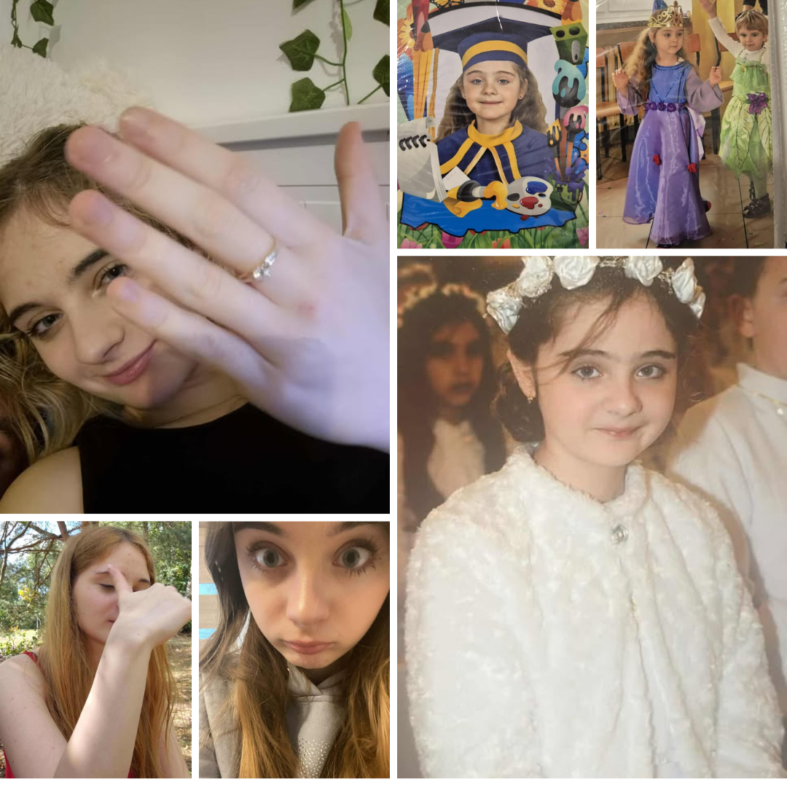

Rok 2007, Ewelinka się rodzi, cudna kobietka na świat przychodzi. 2008 - chodzi już sama, choć Ewelincia jest ciągle mała. Dwuletnia dziewczynka pięknie się bawi oraz bez problemu klocki ustawi. W wieku lat trzech na rowerku jazdy się uczy, każdy ją tego znakomicie nauczy. Czteroletnia gwiazdeczka tańczy i śpiewa, jej dusza artystki, wszystkich olśniewa. 2012 - Ewelincia coraz bardziej dorasta, przez przedszkole jej mądrość coraz bardziej wzrasta. Już duża dziewczynka - w końcu sześć latek, samodzielny i słodki ten nasz przedszkolaczek. Pierwsza klasa i już robi się poważnie, mądrość Ewelinki imponuje wszystkim strasznie. 2 klasa i oceny coraz lepsze, całęgo potencjału Ewelinki nie odkryto jescze. 2016 to rok Komunii Świętej, Ewelincia uczęszcza do niej w sukni pięknej. 10 lat, czas na zmiane szkoły, nowym kolegom z podziwu pod oczami aż zrobiły się wory. Jedenastoletni słodziak posiada ogromną ilość wiedzy, zazdroszczą jej tego wszyscy koledzy. 6 klasa jej dojrzewanie cały czas trwa, doskonale wie ile to dwa plus dwa. Covid, te sprawy Ewelinci nic nie powstrzyma, na widok wujka-policjanta aż ze zdumienia usta zakrywa. Egzamin ósmoklasisty to poważna sprawa, Ewelinka jest do niego dobrze przygotowana. Nowa szkoła a Ewelincia tak samo słodka, ma już w domu i pieska i kotka. 16 lat - już dorosła kobieta, jest naprawdę prześliczna, choć to nie jej jedyna zaleta. Rok 2024, Ewelinka poznaje chłopaka, wyzywa go od biedaka. (przepraszam XDDDDDD [mówi, że ma małego ptaka]{jego zachowania przypominają dzieciaka} 18 URODZINY NASZEJ EWELINKI, Z KTÓRĄ DO KOŃCA ŻYCIA BĘDĄ LECIAŁY MI GODZINKI. KOCHAM CIĘ Z CAŁEJ SIŁY EWELINCIA JESTEŚ NAJLEPSZYM CO MI SIĘ W ŻYCIU PRZYDARZYŁO I WSZYSTKIEGO NAJLEPSZEGO Z OKAZJI 18 URODZIN SKARBIE ❤️
